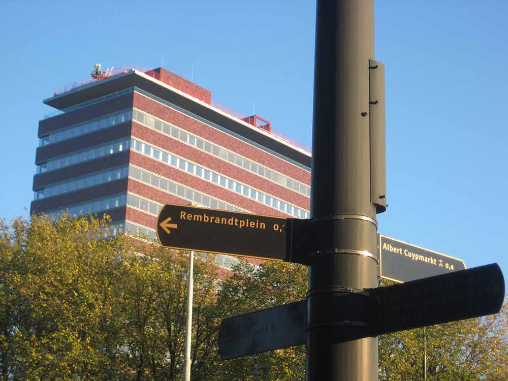
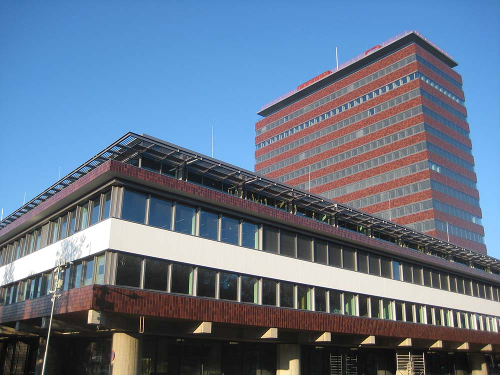
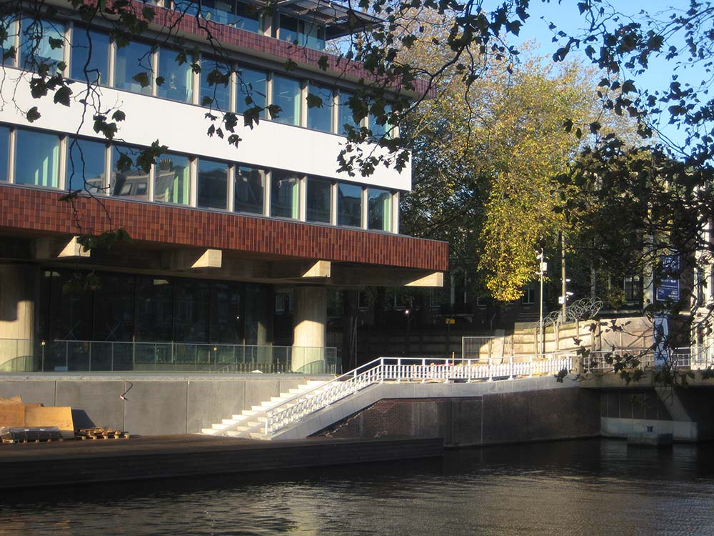

Faciliteiten
Allemaal leuk en aardig, maar wat is er nou eigenlijk te doen voor jou en mij? Dat lees je op deze pagina!
Beeldentuin
Op de plek waar voorheen de tweede toren stond komt nu een beeldentuin. Deze tuin die omringd wordt door het gebouw zal ook een plek worden voor een groot deel van de wildlife in Amsterdam. Vergeet je verrekijker niet!
Zalen
Daarnaast komen er een aantal zalen waar het mogelijk is om een debat, lezing of seminar bij te wonen! Deze ruimtes zullen ook beschikbaar zijn om te huren en te gebruiken voor iedereen.
Kunstcollectie
Naast de ingang (die zich bevind in de voormalige goudkluis) wordt ook ruimte gemaakt voor een heuze kunstcollectie. Hier zal de Nederlandsche Bank onder andere een aantal goudstaven en hun muntencollectie tentoonstellen.